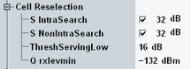

The parameters in this section define cell reselection information to be transmitted in the system information blocks SIB1 and SIB3. For detailed information, refer to 3GPP TS 36.304 and 3GPP TS 36.331.
The section is only visible if R&S CMW-KS510 is available.

Threshold SIntraSearch for intra-frequency measurements.
The threshold is configured in dB. System information block 3 contains the configured value divided by 2. If the checkbox is disabled, the information element is omitted in SIB 3.
Option R&S CMW-KS510 is required.
Remote command:Threshold SnonIntraSearch for inter-frequency and inter-RAT measurements.
The threshold is configured in dB. System information block 3 contains the configured value divided by 2. If the checkbox is disabled, the information element is omitted in SIB 3.
Option R&S CMW-KS510 is required.
Remote command:The parameter "ThreshServing,Low" is used by the UE for reselection towards a lower priority RAT/ frequency.
The threshold is configured in dB. System information block 3 contains the configured value divided by 2.
Option R&S CMW-KS510 is required.
Remote command:Minimum required received RSRP level in the cell in dBm (Qrxlevmin).
The level is configured in dBm. System information block 1 contains the configured value divided by 2.
Option R&S CMW-KS510 is required.
Remote command: